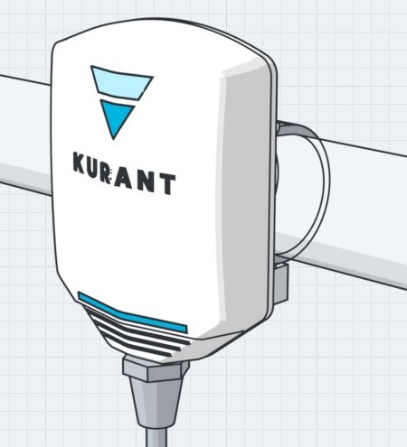

Interface pour vélo électrique
Débranchez l'écran. Branchez Kurant.
Remplacez l'afficheur de votre vélo électrique par votre téléphone. Le module Kurant se branche à la place de l'écran d'origine : vitesse, batterie, puissance et assistance s'affichent en grand, avec des réglages expliqués en mots simples.
- Contrôleurs KT : vérifiés au banc
- Circuit rév. 0.2 et boîtier R7 : en développement
- Campagne Kickstarter prévue : liste de prélancement ouverte
Réglages à l'arrêt

R7 · dessinAvant · Après
Votre vélo a déjà la technologie. Kurant vous donne une meilleure façon de l'utiliser.
Le contrôleur, le moteur et la batterie restent les mêmes. Seul l'écran change : celui d'origine est rangé, votre téléphone prend sa place.
Avant · l'écran d'origine
- Quelques chiffres sur un petit écran à segments
- Codes d'erreur à chercher dans un manuel
- Réglages cachés derrière des codes (P1, C5…)
Après · votre téléphone et le module
- Vitesse, batterie, puissance et assistance en grand
- Codes d'erreur expliqués en clair
- Chaque réglage décrit en mots simples, à l'arrêt
Illustrations. Les photos du prototype installé sur un vélo seront publiées avec les premiers boîtiers.
Fonctionnement
Trois étapes, sans soudure
Le module est le même pour tous les vélos : seul le câble change d'une marque à l'autre. KT d'abord ; les autres marques ensuite, dans l'ordre des votes, chacune dès qu'elle est vérifiée sur un vrai contrôleur.
Débranchez l'écran d'origine
Gardez-le : il se rebranche en tout temps, sans outil.
Branchez le module
À sa place, sur le même connecteur, avec le câble de votre marque (KT au lancement). Le module se fixe au guidon.
Ouvrez l'application et roulez
Sur iPhone ou Android, elle trouve le module et reconnaît le contrôleur. Allumez le vélo depuis l'application : les données s'affichent en direct.
Reste aux commandes : moteur, batterie et capteurs, comme avant.
Garde le vélo en marche, même si le téléphone se déconnecte.
Affiche les données et prépare les réglages.
Ce qu'il faut : un contrôleur dont la compatibilité est vérifiée, et le câble adapté à sa marque. Une marque qui ressemble ou un connecteur identique ne suffisent pas : chaque contrôleur est vérifié au banc avant d'être annoncé.
Vérifier la compatibilitéCompatibilité
Mon vélo est-il compatible ?
Choisissez votre système pour voir où il en est. Après KT, le système qui a le plus d'inscriptions confirmées passe au banc en premier : chaque inscription compte comme un vote.
- Étudiéen développement
- Au bancun contrôleur à l'essai
- Vérifié au banclecture et réglages mesurés
- Confirmé sur la routepar des cyclistes
Ma configuration
Choisissez le système et la tension de votre vélo pour voir le résultat.
Comment trouver mon système ?
- Écran Le modèle est souvent imprimé sur l'écran ou au dos : KT-LCD3, LCD5, LCD8, VM-T8, S866…
- Connecteur Chez Bafang, le connecteur du câble d'écran indique le système : rond à 5 broches, ou triangulaire.
- Étiquette La marque du contrôleur figure sur son étiquette, par exemple KT36/48SVPRL. En cas de doute, recopiez-la dans le formulaire.
- Batterie La tension est inscrite sur la batterie ou le chargeur.
- Vélo La marque et le modèle aident aussi : indiquez-les lors de votre inscription.
Vous ne trouvez pas votre vélo ? Inscrivez-vous quand même : choisissez « Autre marque » et décrivez-le. Ces réponses guident les prochains profils.
Ce que vous voyez
Tout votre trajet, d'un coup d'œil
Vitesse, batterie, puissance et assistance, dans une interface pensée pour la route. La démo en haut de page tourne dans votre navigateur avec des valeurs simulées.
Pendant le trajet
- Vitesse
- km/h
- Puissance du moteur
- W
- Batterie
- V · %
- Niveau d'assistance
- 0 à 5
- Frein
- actif / relâché
- Codes d'erreur
- expliqués en clair
Selon le contrôleur, certaines données peuvent ne pas être disponibles. L'application l'indique au lieu d'afficher une valeur inventée.
À l'arrêt
- Taille de roue
- po
- Limite de vitesse
- km/h
- Modes
- Route · Hors route
- Éclairage
- marche / arrêt
- Historique des trajets
- sur votre téléphone
- Mises à jour du module
- par l'application
Chaque réglage est décrit en mots simples, avec sa valeur actuelle, avant toute modification.
Le module R7, ouvert
Tiré directement des fichiers de conception
- Sur le guidon avantPrès de la sortie du câble de l'écran, face à vous, sur le même connecteur que l'écran d'origine.
- Une coque d'une pièce, un joint continuLe joint fait tout le tour de la plaque arrière. 29 mm d'épaisseur, 41 % de moins que le premier prototype.
- Le circuit, tenu sans visDes nervures et des coussinets le gardent en place, sans jeu.
- Deux vis et une attache sans outilL'attache se tourne sur le module et serre les guidons de 22,2 à 35 mm. Trois lumières montrent l'état du module.
Faites glisser le modèle pour le tourner. Modèle tiré des fichiers de conception (révision R7) : premiers prototypes imprimés à venir, le boîtier final peut encore changer.
Chargement du modèle 3D…
Sécurité
Une fois allumé, le vélo ne dépend plus du téléphone
Ces règles font partie de la conception du module et de l'application. Le journal publie les essais au banc, dont celui du téléphone coupé.
- Téléphone absent
Le vélo continue de rouler
Le module maintient seul la liaison avec le contrôleur. Un téléphone déchargé, une application fermée ou une mise à jour en cours ne coupent pas l'assistance.
- > 0,5 km/h
Aucun réglage en roulant
Au-delà de 0,5 km/h, ou si la vitesse est inconnue, les réglages sensibles sont verrouillés.
- 1,5 s
Pas de valeur figée
Sans nouvelle donnée depuis 1,5 seconde, l'écran affiche « -- » au lieu d'un ancien chiffre.
- Vérifié
Réglages ouverts seulement après vérification
Un réglage n'est modifiable que si son codage a été mesuré sur un vrai contrôleur. Les plus importants demandent une confirmation écrite.
- 32 km/h
Mode Route par défaut
À la livraison, la vitesse est limitée au maximum permis dans votre province : 32 km/h au Québec.
- Hors-route
Un mode pour terrain privé
Il s'active à l'arrêt, par un appui de 1,5 seconde suivi d'une confirmation. Sur la voie publique, un vélo réglé au-delà de 32 km/h n'est plus considéré comme un vélo à assistance électrique. Le cycliste est responsable de l'usage de ce mode.
Journal de développement
Conçu au grand jour, mesuré sur un vrai contrôleur
Chaque étape est publiée une fois mesurée au banc, et les problèmes trouvés aussi. Voici les dernières entrées.
Campagne Kickstarter
Soyez parmi les premiers à rouler avec Kurant
Kurant sera financé par une campagne Kickstarter en tout ou rien. Les membres de la liste de prélancement reçoivent le lien avant tout le monde : c'est le chemin le plus court vers les 100 modules à 119 $.
- Objectif
- 24 000 $, en tout ou rien : personne n'est débité s'il n'est pas atteint
- Application
- Gratuite, sans abonnement ni compte
- Autre marque que KT
- Réservez votre système à 1 $ pendant la campagne
- Livraison
- Canada, environ 6 mois après la campagne
S'inscrire n'est pas une contribution. Aucun paiement n'est demandé ici, et l'inscription ne réserve aucun module : elle vous avertit en premier. Les récompenses et leurs prix sont prévus, et seront offerts sur Kickstarter, au lancement.
Où va l'argent
Chaque dollar de l'objectif a sa ligne. C'est la même répartition que sur la page Kickstarter, en dollars canadiens.
- 200 modules6 400 $
- Essai d'émissions, avec réserve pour un second essai5 000 $
- Assurance responsabilité3 000 $
- Livraison aux contributeurs2 300 $
- Frais Kickstarter et paiement2 200 $
- Juridique : conditions, marque2 000 $
- Imprévus1 600 $
- Vélo de démo, vidéo, photos1 500 $
- Total, l'objectif24 000 $
Liste de prélancement
Accès anticipé
Votre courriel suffit. Les détails sur votre vélo sont facultatifs et peuvent venir ensuite.
- Confirmez votre courrielun lien vous est envoyé tout de suite
- Recevez votre numéro de fondateuret votre lien personnel à partager
- Soyez averti en premierau lancement de la campagne, avant tout le monde
Questions
Questions fréquentes
Compatibilité
Quels vélos seront pris en charge ?
Au lancement, les contrôleurs KT (écrans LCD3, LCD5, LCD8) sur batterie de 48 ou 52 V : ils sont vérifiés au banc. Bafang UART, Lishui, Rad Power Bikes, Lectric et Aventon (48 V) sont en développement ; les systèmes 36 V comme Shimano STEPS viendront plus tard. Réservez votre système à 1 $ sur Kickstarter : les plus réservés passent au banc en premier. Bosch n'est pas prévu : son système est fermé. Utilisez l'outil de vérification plus haut pour votre vélo, ou voyez où en est chaque marque.
Est-ce compatible avec l'iPhone ?
Oui. L'application sera offerte gratuitement sur iPhone et sur Android, sans compte.
Installation
L'installation demande-t-elle de souder ?
Non. Kurant se branche sur le connecteur de l'écran d'origine, avec un câble adapté à votre contrôleur. Gardez l'écran d'origine : vous pouvez le rebrancher en tout temps.
Où s'installe le module ?
Sur le guidon avant, à la place de l'écran d'origine, sur le même connecteur.
Le support de téléphone est-il inclus ?
Non : utilisez votre support de guidon. Un modèle avec recharge est recommandé pour les longues sorties.
Application et sécurité
Comment allume-t-on le vélo ?
Depuis l'application. Le module garde ensuite le vélo allumé, même si le téléphone se déconnecte.
Que se passe-t-il si mon téléphone se décharge ?
En route, le vélo continue de fonctionner avec l'assistance choisie ; vous perdez l'affichage jusqu'à la reconnexion. Si le téléphone est déchargé avant de partir, rebranchez l'écran d'origine : il se rebranche en quelques secondes, sans outil.
Faut-il créer un compte ?
Non. L'application ne demande pas de compte, et l'historique des trajets reste sur votre téléphone.
Kickstarter et prix
Quel sera le prix ?
Le prix prévu est de 159 $ CA, taxes en sus, module et application compris. Pendant la campagne Kickstarter : 119 $ pour les 100 premiers, puis 139 $. L'application ne demande aucun abonnement.
Quand Kurant sera-t-il offert ?
Le prototype fonctionne déjà sur un vrai contrôleur KT ; il reste à ajouter les profils des autres marques. Kurant sera lancé par une campagne Kickstarter, livrée au Canada environ six mois après sa fin : circuit et boîtier finaux, certification, puis production. La liste d'attente sera avertie en premier.
Pourquoi « Kurant » ?
De « courant » : le courant électrique qui fait avancer votre vélo, et être au courant de tout ce qu'il fait.